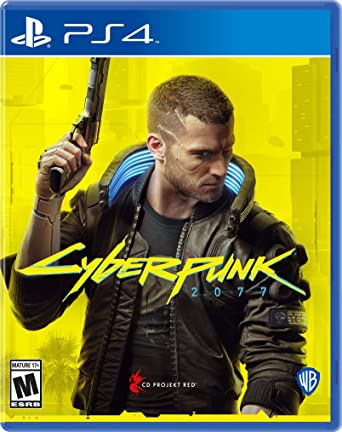
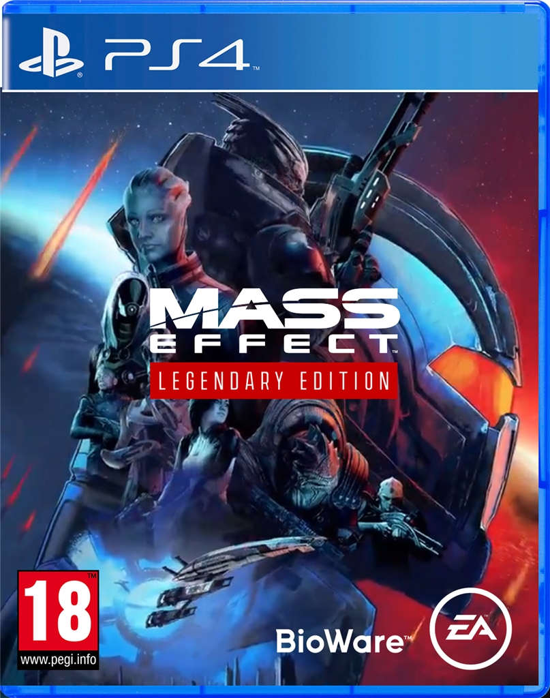
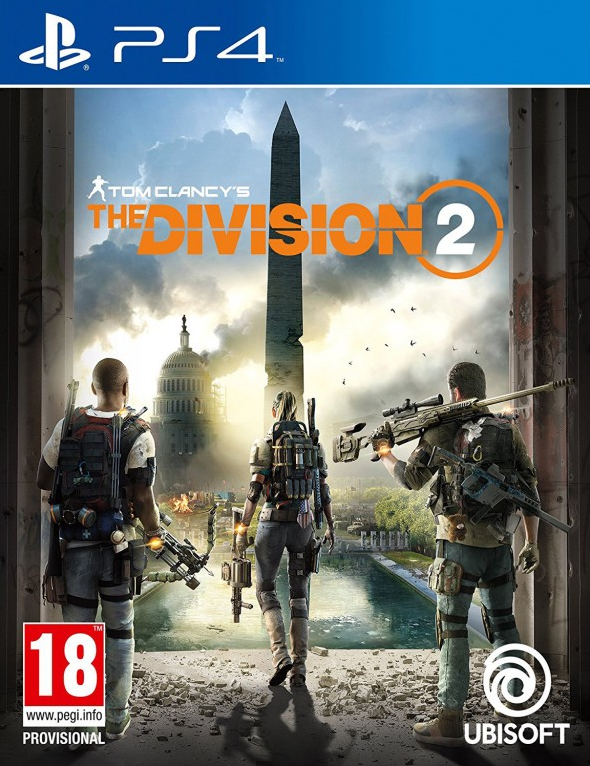
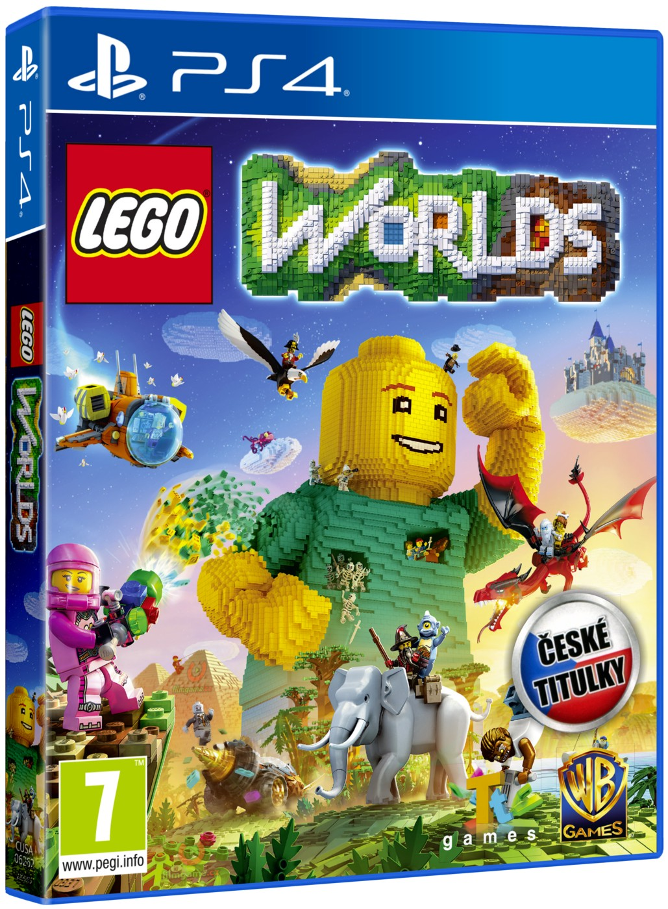
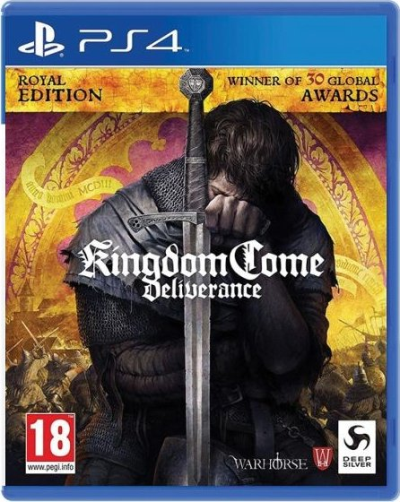
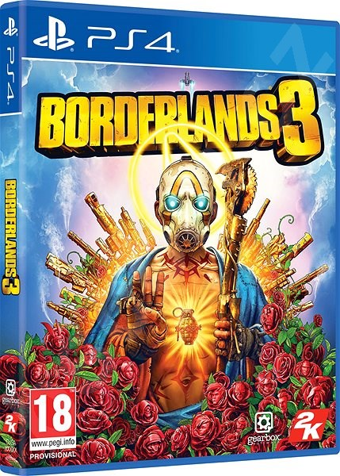
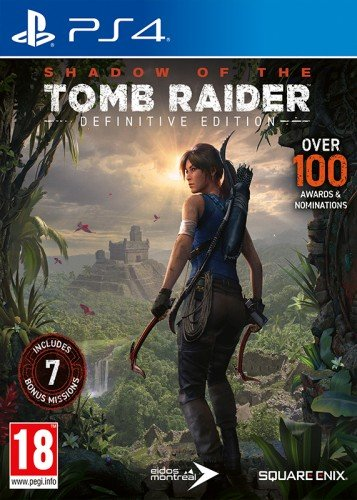
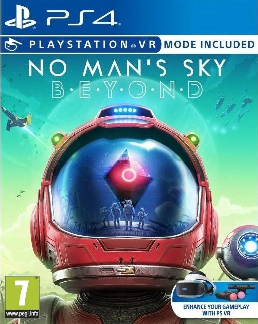
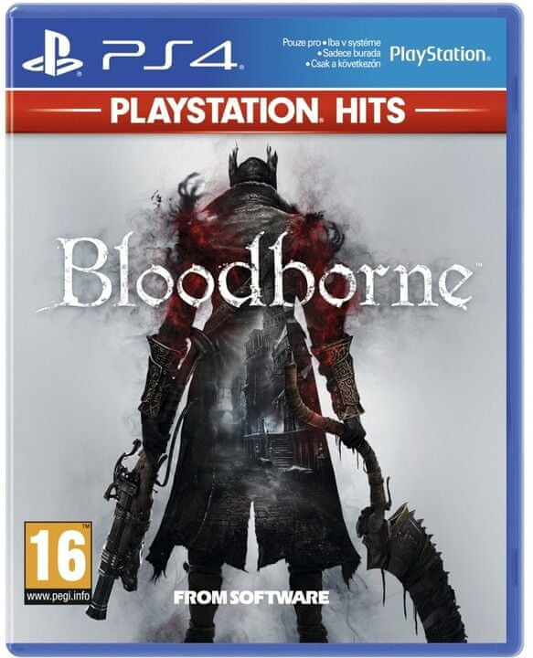

Nejlepší hry pro PlayStation 4
RPG videohry
Hra na hrdiny, rolová hra, anglicky role-playing game zkracované na RPG je druh hry, ve které hráči zaujímají role fiktivních postav, za které podle daných pravidel v samotné hře jednají.
Cyberpunk 2077 - PS4
Vývojář: CD Projekt
Datum vydání: 17. září 2020
Hodnocení: 7/10
České titulky: ano
O hře: Děj se odehrává v dystopickém městě Night City, v otevřeném světě složeném ze sedmi různých regionů. Hráči přebírají roli přizpůsobitelného žoldáka jménem „V“, získávají dovednosti v nejrůznějších odvětvích, od hackování po kontaktní boj. Je možné hrát brutální i mírumilovnou cestou.
Mass Effect Legendary Edition - PS4
Vývojář: BioWare
Datum vydání: 14. května 2021
Hodnocení: 8/10
České titulky: ne
O hře: Příběh hry se odehrává v roce 2183, 35 let poté, co lidstvo narazilo na Marsu na pozůstatky mimozemského druhu Protheanů a za pomoci technologie, kterou tam objevili, pochopili fungování polí hmotového efektu (mass effect fields) a elementu nula.
Tom Clancy's The Division 2 - PS4
Vývojář: Massive Entertainment
Datum vydání: 7. února 2019
Hodnocení: 8/10
České titulky: ano
O hře: Pokračování The Division: Tom Clancy (2016) se odehrává v blízké budoucnosti Washingtonu, DC v důsledku pandemie neštovic, a sleduje agenta Strategické domovské divize, když se snaží znovu vybudovat město. Hra byla vydána pro Microsoft Windows, PlayStation 4 a Xbox One dne 15. března 2019.
LEGO Worlds - PS4
Vývojář: Traveller's Tales
Datum vydání: 7. března 2017
Hodnocení: 7/10
České titulky: ano
O hře: Lego Worlds je sandboxová videohra, která hráčům umožňuje postavit svět složený z kostek Lego. Hráč je odměněn za sbírání předmětů rozmístěných po mapě pomocí „cvoků“, herní měny. Hráč může stavět pomocí předmětů, se kterými se setkal. Hráči si mohou vytvořit svůj vlastní svět pomocí předdefinovaných staveb Lego nebo pomocí „nástroje pro úpravu cihly po cihle“. Vzhled a oblečení hráčů je ve hře přizpůsobitelné. Terén a prostředí lze upravovat pomocí nástrojů pro úpravu krajiny. Ve hře je řada vozidel, jako jsou vrtulníky a stvoření. Prostřednictvím pozdějších aktualizací byla do hry přidána možnost hry pro více hráčů a funkce pro sdílení světa.
Kingdom Come: Deliverance - PS4
Vývojář: Warhorse Studios
Datum vydání: 13. února 2018
Hodnocení: 8/10
České titulky: ano
O hře: Příběh se odehrává roku 1403, český král Václav IV. je v zajetí a jeho bratr Zikmund usiluje o ovládnutí Českého království. Hra vypráví o Jindřichovi, který se svou rodinou žije ve Skalici. Jeho otec Martin ho jednoho obyčejného dne vyšle pro uhlí, pivo a záštitu na výrobu meče pro místního pána, Racka Kobylu.
Borderlands 3 - PS4
Vývojář: 2K Games
Datum vydání: 13. září 2019
Hodnocení: 9/10
České titulky: ne
O hře: Na rozdíl od přechozích dílů, se děj Borderlands 3 odehrává na několika planetách. Cílem v této hře je zastavit dvojčata Troye a Tyreen Calypso, v získání síly z mimozemských krypt, které jsou rozmístěné po celé galaxii.
Shadow of the Tomb Raider - PS4
Vývojář: Eidos Montreal
Datum vydání: 12. září 2018
Hodnocení: 9/10
České titulky: ne
O hře: Příběh Shadow of the Tomb Raider se odehrává pár měsíců po konci Rise of the Tomb Raider. Tedy v době, kdy Lara Croft už zjistila, že za smrtí jejího otce stojí zlá organizace Trinity, které není nic svaté. Předchozí dva díly byly dle vývojářů založeny na tom, že se Lara snažila přežívat v nehostinném prostředí plném vojáků i dalších nepřátel. To Shadow of the Tomb Raider v tomto bude trochu jiný, protože půjde hlavně o záchranu světa, a jak říkají vývojáři, vůbec poprvé uvidíme Laru, která si není jistá a prostě a jednoduše dělá chyby, které mají následně vliv i na to, že nevinní lidé zemřou.
No Man's Sky Beyond - PS4
Vývojář: Hello Games
Datum vydání: 8. srpna 2016
Hodnocení: 8/10
České titulky: ne
O hře: No Man's Sky je nezvyklá kombinace vesmírného simulátoru, adventury a střílečky. Hra nabízí především neskutečně velkou herní oblast, která má čítat 18 trilionů procedurálně generovaných planet. Hráč začne na jedné z těchto planet a jeho cílem bude proniknout do samotného centra galaxie.
Bloodborne - PS4
Vývojář: From Software
Datum vydání: 24. března 2015
Hodnocení: 9/10
České titulky: ne
O hře: První okamžiky hry se odehrávají z pohledu první osoby hlavní postavy, jednoduše zvané Lovec (Hunter), který je operován rukama starého muže na vozíku. Stařec vysvětlí, že provádí krevní transfúzi a Lovci řekne, že s „bledou krví (paleblood) přišel na správné místo“, a že nejprve bude potřebovat kontrakt. Následně varuje Lovce, že může zažít noční můry a začne se škodolibě smát. Obrazovka pak na chvíli ztmavne, a když se vše vrátí do normálu, hlavní postava leží na operačním stole a velká, masitá krvavá bestie se zvedne z podlahy a drápy se rozpřáhne po paralyzovaném Lovci.
David Švancar © 2021